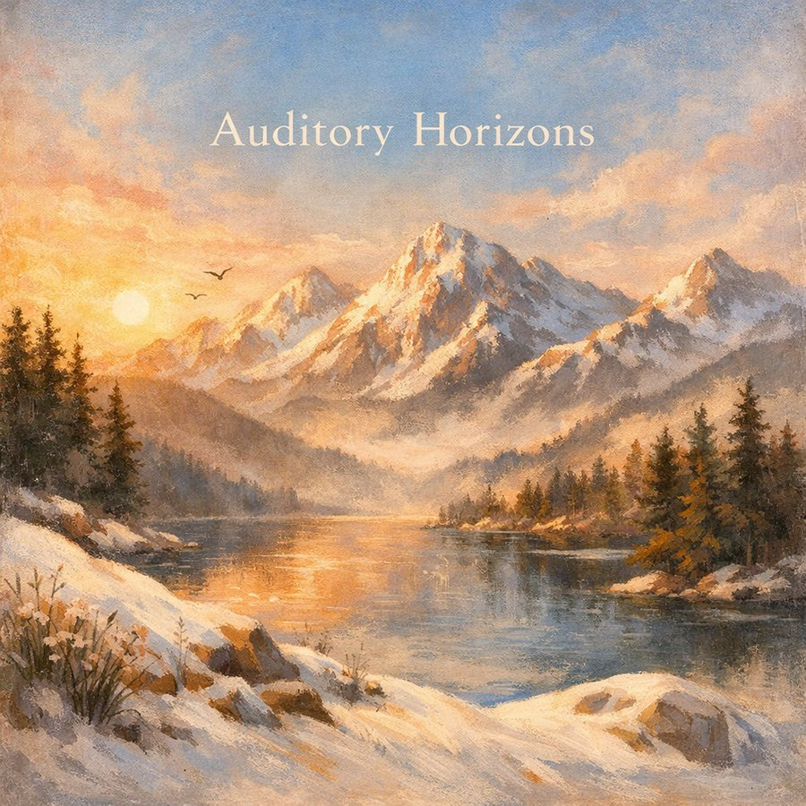
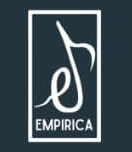
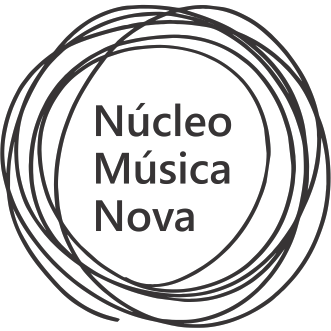

Releases作品發行
Albums, physical releases, and curated features of Zoe (Yi-Cheng) Lin's music.
林宜徵音樂作品的專輯、實體發行，以及策展／媒體收錄紀錄。
Albums專輯

Auditory Horizons
An orchestral album traveling through sunlit gardens, autumn forests, misty mountains, serene seas, and alpine peaks—a hand-crafted, immersive soundscape across landscapes, light, and emotion.
一張管弦樂專輯，帶領聽者穿越陽光花園、秋日森林、雲霧山巒、寧靜海洋與高山峰頂——一幅手工打造、沉浸於地景、光線與情感之間的聲音風景。
Curated & Featured策展與媒體收錄
Works selected by curators for their own platforms, exhibitions, and productions.
作品經策展人選入其平台、展覽與製作計畫。

EMPIRICA RECORD 2024
Featuring Glacier
收錄：冰川
Selected by EMPIRICA, in partnership with MID SIDE APS, championing experimental classical, contemporary, and electronic music.
由 EMPIRICA 與 MID SIDE APS 合作評選，致力推廣實驗古典、當代與電子音樂。
📄 REF 2024 Program Book (PDF)📄 REF 2024 節目冊（PDF）
🔗 REF Resilience Festival 2024 (Électroprésence)🔗 REF Resilience Festival 2024（Électroprésence 節慶頁）


Sonic Alchemy
Featuring The Spirit of the Giant Tree
收錄：神木之靈
Compilation album for SiMN 2023, presented by Núcleo Música Nova.
SiMN 2023 合輯專輯，由 Núcleo Música Nova 製作發行。
Sound, Image聲音・意象
Featuring Dialogue Entre Des Temps
收錄：時間的對話
For solo saxophone with improvised instrument and pre-recorded soundtrack (10'05"), with Zoe (Yi-Cheng) Lin also performing piano. Recorded by Chun-Hao Ku (顧鈞豪). Audio recording published on the CD album Chun-Hao Ku / Sound, Image | Saxophone Commissioned Composition and Performance Album.
為薩克管、即興樂器與預錄音軌創作（10'05"），林宜徵並演奏鋼琴。由顧鈞豪錄製，錄音收錄於專輯《顧鈞豪／聲音・意象｜薩克斯風委託創作演奏專輯》。
Press & Recognition媒體報導與收錄
Media coverage and archival documentation of Zoe (Yi-Cheng) Lin's work.
林宜徵作品的媒體報導與資料庫收錄紀錄。
IRCAM Forum Workshops 30th Anniversary CoverageIRCAM Forum 30 週年活動報導
Press coverage of C-LAB and IRCAM's 30th anniversary Forum Workshops in Paris, featuring the premiere of Glacier in ambisonic surround sound.
C-LAB 與 IRCAM 於巴黎合辦之 30 週年 Forum Workshops 相關報導，內容提及《冰川》以 Ambisonic 環繞聲首演。
Artist Profile藝術家詞條
Documented as "Nagretshei, Sebastian" in EMDoku, a German electronic music documentation archive, with a biography sourced from her NYCEMF 2023 artist bio.
以「Nagretshei, Sebastian」之名收錄於德國電子音樂文獻資料庫 EMDoku，簡介取自 2023 年 NYCEMF 作者簡介。